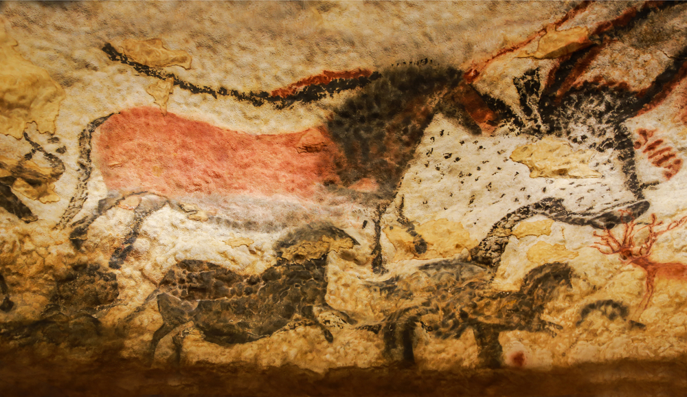
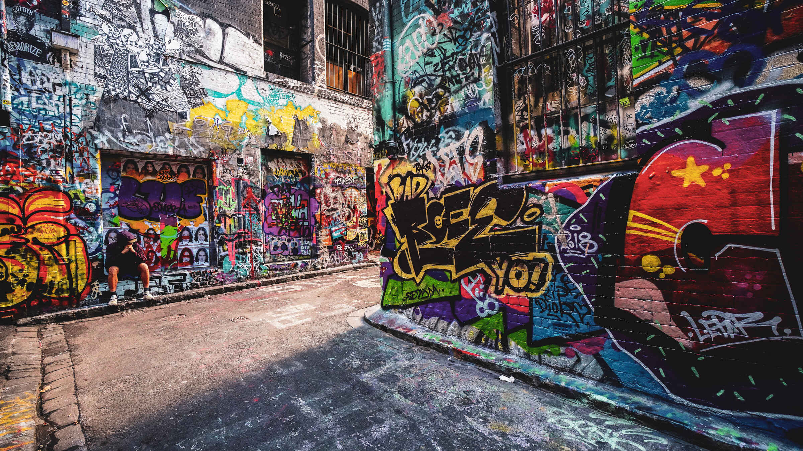

Credit: henryz /Photo Name: Great Destination/Published: May 4th, 2009
Source:wallpaperaccess.com
Art is a language used by people to express their creativity, skill, and imagination. Unlike HTML and CSS, and standard spoken and written language, art does not have a set of rules and can be expressed in a variety of different ways. One of the most popular types of art would be visual art, such as paintings, drawings, videos, etc.
Did you know that graffiti is the oldest form of art? There are probably many doubters since “graffiti requires tools that would’t have existed centuries ago,” but that is wrong. When gadgets such as spray cans, stencils, airbrushes, etc., were not available, that didn’t stop artists from drawing graffiti on caves 14,000 – 40,000 years ago.
Cave art is considered graffiti; it is the earliest form of discovered human art. Cave art is thought of as having symbolic or religious meaning behind the artwork, as some experts predict that they were done for shamanic practices. Such a practice would require going into the depths of a cave for a ceremony where a shaman would send their soul to connect with spirits and seek their compassion. These special engravings are typically found in Europe, but they can also be found in places such as Mayan caves in southern North America, South Australia, and in Asia. It is also thought that the art was done by Homo sapiens.
Credit: [unknown]/Photo Name: Cave Art Origin/Published: [unknown]
Source:frontiersin.org
Graffiti has evolved since then and many artists present their artwork on walls of abandoned buildings, underneath bridges, and on the exterior walls of public buildings. Unfortunately, modern graffiti is considered a crime since most artists present their artwork on private property without consent, which is vandalism. Though they are usually colourful and lively, they are thought of as being related to gang activity.
Credit: [unknown]/Photo Name: Graffiti Alley, Toronto/Published: [unknown]
Source:getyourguide.com
Painting is an image using colour on a surface such as paper. There are many forms of pigments that can be used, such as acrylic paint, oil pastels, watercolour, etc. Painting styles vary from the past to the present, with many artists in the past who would combine their pigments with water, saliva, urine, or animal fats to form paint, which they would then apply to a surface using their fingers, brushes, or blowing them through hollow bones; inspiring today's airbrushes.

Starry Night is a painting done by Vincent van Gogh in the late 1800’s. The painting was inspired by the view from his window at the Saint Paul de Mausole asylum in Saint Rémy, located in southern France. This asylum was where the artist spent a year seeking acquittal from his mental illnesses. The painting was done with the colours ultramarine, cobalt blue, and Indian yellow combined with zinc yellow.
As the most famous painting done by van Gogh, it has an estimated present value of around US$100 million. It is currently located at the Museum of Modern Art, New York City, and can be found on 5th floor.
Credit: Vincent van Gogh/Photo Name: The Starry Night/Published: Saint Rémy, June 1889
Source:overstockart.com

Modern art is a piece of art that was produced from the 1860’s to the 1970’s. This was the era where artists would experiment with the way of seeing art, and the materials involved. Pioneers of modern art start with painters such as the famous Vincent van Gogh and his idol Paul Gauguin, among others like Paul Cézanne, Georges Seurat and Henri de Toulouse-Lautrec were all inspirational figures for the development of modern art.The types of art seen in modern art are original and unique, unlike traditional artworks like the Mona Lisa. Most Western visual culture advanced from modern art during the contemporary era and the art style has created a variety of movements. Modern architecture also stemmed from modern art, with our current society containing these building types. This includes designs of schools, the creation of today’s apartment buildings, skyscrapers, etc.
Credit: [unknown]/Photo Name: Manhattan/Published: [unknown]
Source:en.wikipedia.org
Contemporary art is a variety of art, varying from videos, photographs, street art, geographical art, performance art; it's essentially another concept for visual art. In simple terms, contemporary art means the things we know as art, such as painting, sculpting, photography, etc. It’s considered to be the era of art preceding modernism, (a.k.a. modern art) so the kinds of art are still debatable. It is better known as our current era of art. Some examples of contemporary art forms include painting, sculpture, architecture, poetry, music, literature, and dance. They are considered to be contemporary “fine” art.
Credit: Lydia Yang/Photo Name: Contemporary Art Collage/Published: October 11th, 2021
Source: Paint 3D + Photos on my laptop

Digital art is artistic work done using technology as a way to present it. Most artists use this form of art for digital painting, a way to have all the possible tools needed for a work of art using a single device. Other forms of digital such as digital photography, algorithmic and fractals, projection mapping, animating, etc., are also commonly used.
Credit: [unknown]/Photo Name: Cat Vibing Meme Gif/Published: [unknown]
Source:stayhipp.com

 Back to top
Back to top